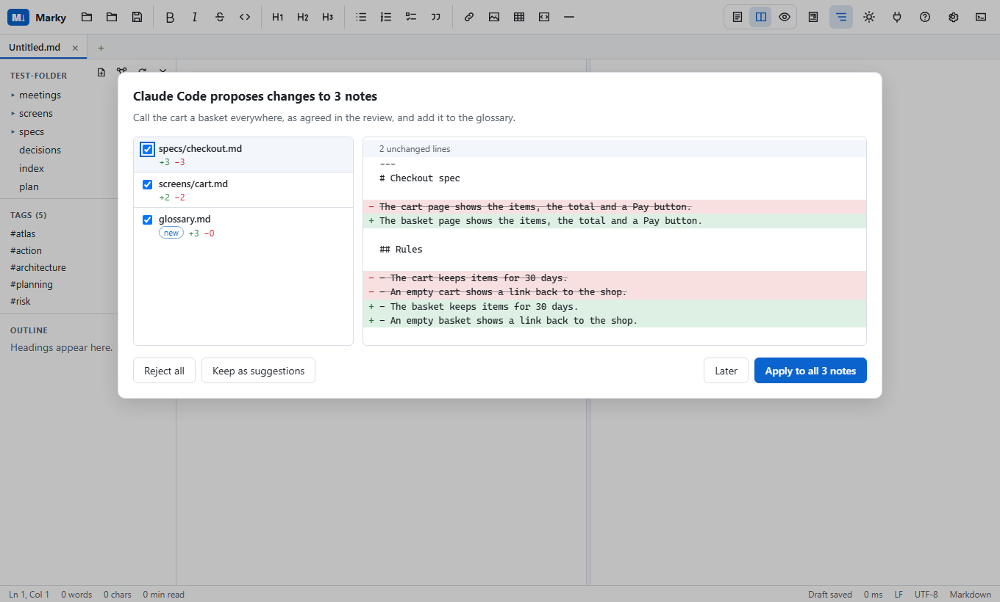
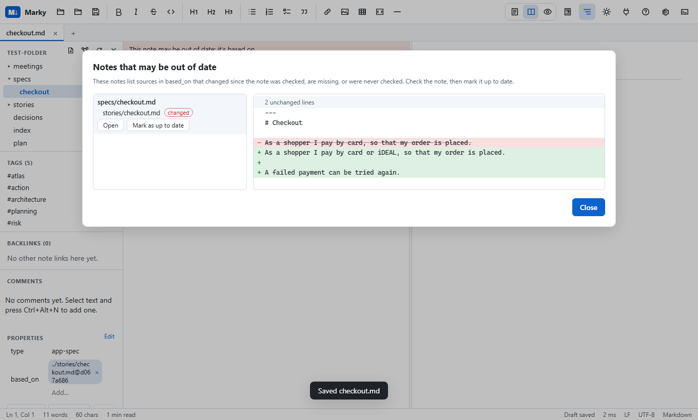
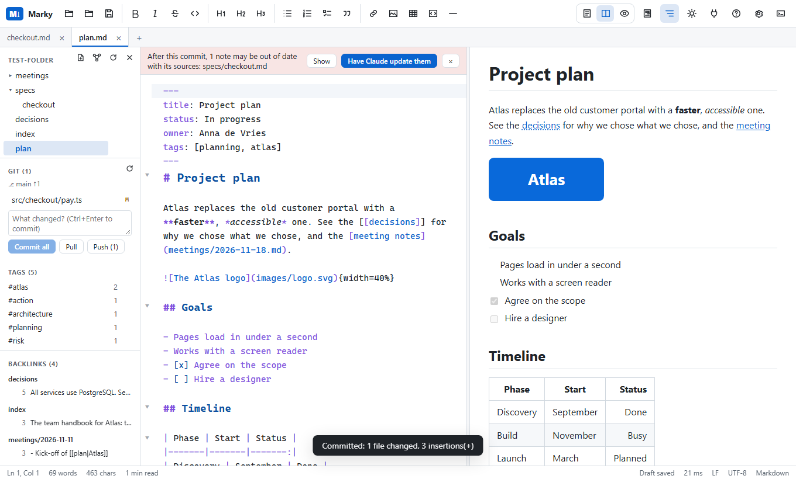
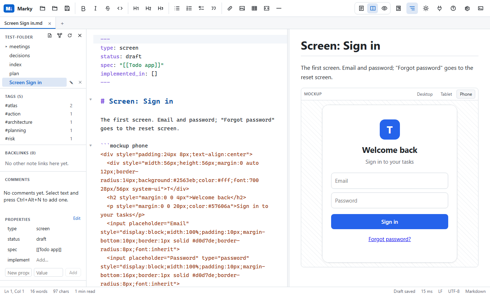
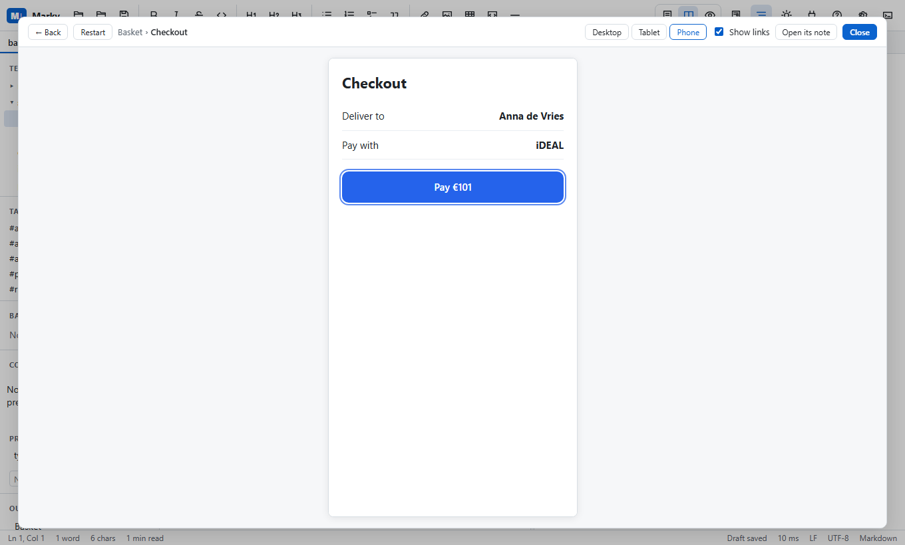
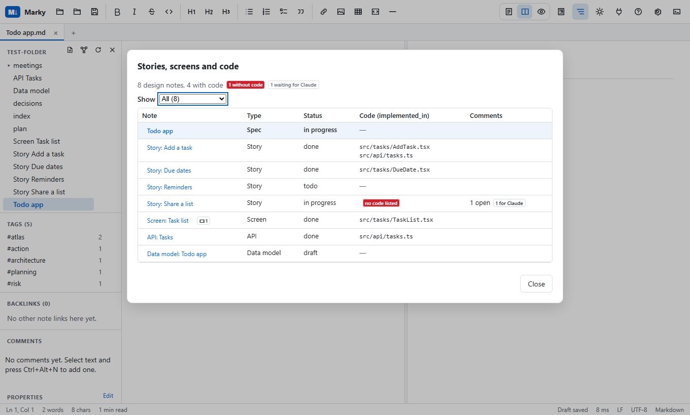
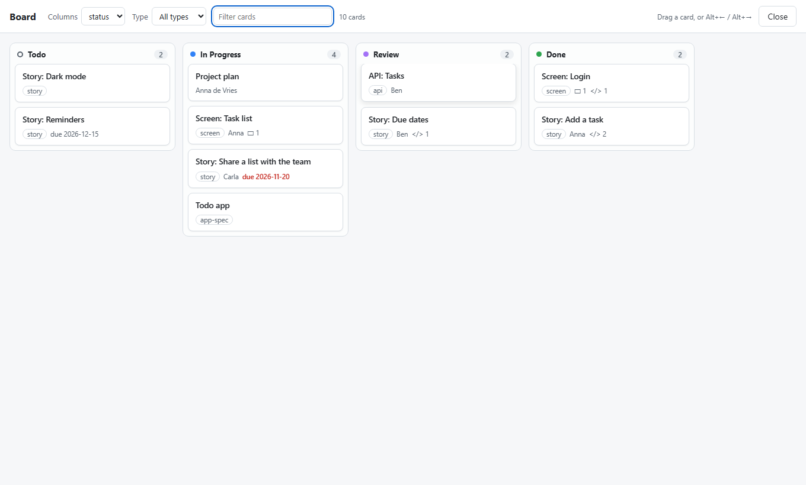

14. AI agents (desktop)
Marky works with the AI coding agents you may already use: Claude Code, OpenAI Codex and Gemini CLI. They run on your computer with your own account; Marky gives them tools to read and search your notes and to propose changes, which you accept or reject.
Starting an agent
Start Claude Code in the terminal (or Start Codex / Start Gemini CLI) opens Marky's terminal (Ctrl+`) with the agent already connected to Marky. Ask it about your notes: summarise what we decided about the database, find notes that contradict each other, write release notes from these changes.
What agents can do
- Read and search the open folder's notes (not encrypted ones), the open tab, and text in pictures (when OCR is on).
- Propose changes: a proposal shows as an inline difference in the note. Accept, Reject, or Keep as suggestions (the agent's changes become suggestions in its name, to review later or hand to someone else).
- Create notes: you see the new note as a proposal; when you accept it, it's written to the folder and opened.
- Change several notes at once: renaming a term everywhere, or bringing specs in line with a changed story, comes as one change set (see below).
- Read and answer comments: write @Claude in a comment and the agent sees it waiting for it. It makes the change you asked for (as a proposal), replies in the thread and resolves it. Its comments are marked AI.
Agents can't save, change or delete your notes themselves: a change waits for you, and only a new note you accept is written at once. The one thing they write without asking is comments: only in the note's comments file, never in its text, with a notice each time.
Reviewing an agent's work
Review a plan or spec an agent wrote the way you'd review a colleague's: select text, add a comment (Ctrl+Alt+N) and mention @Claude (it's in the list when you type @). The thread shows Waiting for Claude. Then tell Claude Code handle my comments in Marky: it finds every thread that asks it something, in any note of the folder, proposes the changes, answers each thread and resolves it. Reply with another @Claude to go on; a thread without a mention is left to people.

Changes across several notes
When an agent's change touches more than one note, it arrives as one change set: a dialog lists every note it changes (new for notes it creates), with the lines added and removed, and shows each note's change when you click it.

- Untick the notes you don't want, then Apply. Everything you kept is applied together: open notes get the change in the editor (Ctrl+Z works, you save as usual), closed notes are written.
- Undo in the bar that follows puts all of them back, except a note someone changed since, which is left as it is.
- Keep as suggestions puts the changes into the notes as suggestions in the agent's name; Later puts the review aside (a bar above the editor brings it back); Reject all changes nothing.
- Marky checks every edit before showing anything: if one of them doesn't fit its note, the whole set is refused and the agent is told which one.
Notes that may be out of date
A spec written from a story, or a screen built on an ADR, can say so in its properties:
based_on:
- ../stories/checkout.md
- "[[Payment ADR]]"
Mark note as up to date with its sources (command palette) records a fingerprint of each source next to it (checkout.md@3f9a2c1b), and Marky keeps a copy of the source as it was. Sources can also be code in the folder (- ../src/checkout/pay.ts): a spec that lists the code it describes is flagged when that code changes. When a source's text changes later (a note's properties don't count), the note shows a bar: This note may be out of date. Show what changed shows the source's changes since the check; Mark as up to date records that the note is in line again. Notes that may be out of date… lists every such note in the folder, including sources that are missing or were never checked.

After a commit or a pull (desktop, with Git), Marky checks the folder by itself: when notes are now out of date with their sources, a bar says which. Show lists them with what changed; Have Claude update them starts Claude Code, which brings them in line as one change set for you to review. (Switch this off in Settings › Features. In the browser the button copies the instructions for Claude Code instead.)

Agents can do the checking for you at any time too: tell Claude Code bring the specs in line with the stories. It asks Marky which notes are out of date and what changed in their sources, then proposes one change set that updates them and marks them up to date when you accept it.
Designing and building an app
Design the app in notes first, then hand it to Claude Code:
- New note from template has an app design kit: App spec, User story, Screen (with mockup), Data model and API endpoint. The spec links to its stories and screens with
[[links]]. - Sketch screens as mockups: type
/mockup, or write HTML in a```mockupblock (```mockup phoneortabletto start at that width). The preview shows it as a real page; the buttons above it switch between desktop, tablet and phone. Claude can write and change mockups too. Mockups can't run scripts or open anything: links inside them only jump to#anchorsor to other screens (below). Pictures from the internet show in a mockup only when Load images from the internet is on (Settings › Preview). - Comment on the spec and the mockups with @Claude wherever you want something changed or answered.
- Build this note with Claude Code asks which project folder to build in, then starts Claude Code there. It reads the spec, its mockups, the linked notes and your open comments, builds the app with its own tools (asking you as usual before it changes files) and answers your comments as it goes. When something is built, it proposes adding the files to the note's
implemented_in:so you can trace a story to its code.

Click through it as a prototype. A mockup links to another screen with <a href="screen:Checkout"> or, on anything else such as a button, data-screen="Checkout". A screen's name is its <title>, or its first heading. Click such a link in the preview, or ▶ Play above a mockup, and the prototype player opens: one screen at a time at the mockup's size, where links go to their screens.
- Screens are found in the same note first, then in the other notes of the folder: a mockup with that name, or the first mockup of a note with that title or file name. So Cart in
screens/cart.mdcan link to Checkout inscreens/checkout.md. - Back (Alt+←) and Restart walk the way you came; the bar above shows it. Show links outlines everything that can be clicked; a link to a screen that doesn't exist says so. Switch between desktop, tablet and phone at any time; Open its note takes you to the screen's mockup.
- Play mockups as a prototype (command palette) starts at the note's first mockup. A published page (chapter 13) plays its own screens too.
- Claude knows the links: it builds them as the app's navigation, and links the mockups it writes the same way.

Stories, screens and code (command palette) shows the design notes in the folder: every spec, story, screen, API endpoint and data model, with its status and the code files it lists. A story that's under way or done but lists no code is marked no code listed, and threads waiting for Claude are counted. Click a note to open it; Show filters on what's missing. Desktop: Marky checks that the files exist in the project folder you build in (✓ or ✗); pick a folder with Pick project folder… if it doesn't know one yet. It only looks whether the files are there, it doesn't read them. Claude sees the same overview with its get_traceability tool.

Board (Ctrl+Alt+B) shows the same notes as cards in columns by their status (or another property, such as priority or owner), with a filter by type and a search. Drag a card to another column, or select it and press Alt+←/→: Marky changes only that line in the note's properties. Enter opens the note.

Release notes from done work asks for a date and makes a new note listing the design notes that became done since then, grouped by kind (specs, stories, screens …), each with a link and its first sentence. A done: date in a note's properties counts; otherwise the time it was last changed.
When Claude changes code, its relevant_context tool finds the notes that belong to those files (the stories that list them in implemented_in:, notes that mention their paths, and their specs), so it checks its work against the right design.
Describe the API in an ```openapi block and the visual style in a ```tokens block (see Pictures, media and diagrams): Marky shows them as documentation and swatches, and Claude builds from the same text.
Mockups go into exports too: an HTML file shows the page itself (in a frame that can't do anything); PDF, Word, slides, Confluence and copies show a picture of it, in the note's design tokens. Pictures from the internet that the mockup showed are copied into that picture when their server allows it (not in Firefox); otherwise (or with pictures from the internet switched off) a grey box with the picture's description takes their place.
Ask your notes
Ask your notes (Ctrl+Shift+L) opens a chat panel beside the note. Ask a question in plain words; Claude answers from your notes and names the ones it used.
The writing assistant
Select text and press Ctrl+Alt+R: improve, shorten, fix spelling and grammar, more formal, more casual, translate, or your own instruction. Also Ask the AI to summarise the note (or selection) and Ask the AI to describe images without alt text. Pick which agent does this in Settings › Features › AI agent.
Privacy
Only what you ask about goes to the AI: the selection for the writing assistant, and what the agent reads with its tools for the others. Encrypted notes are never available to agents.